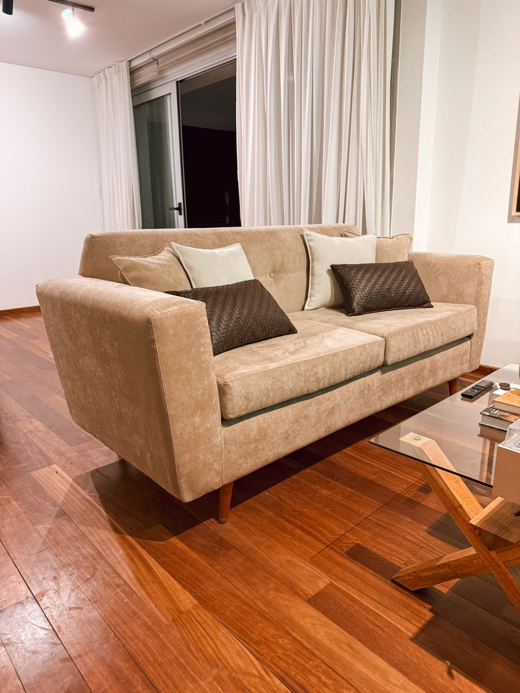
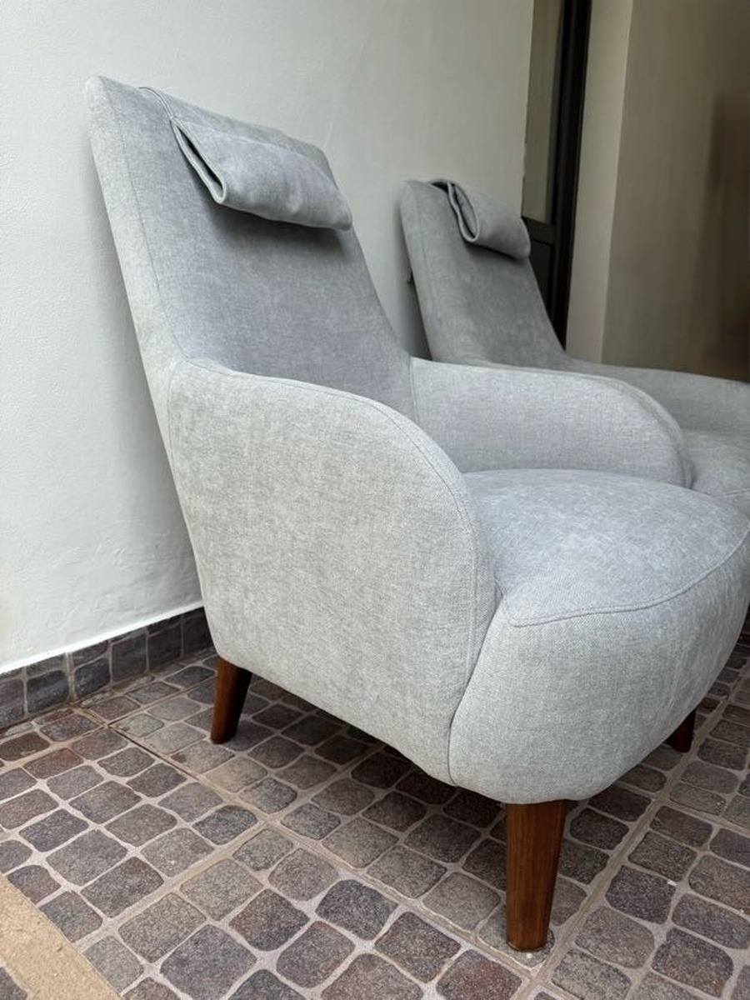
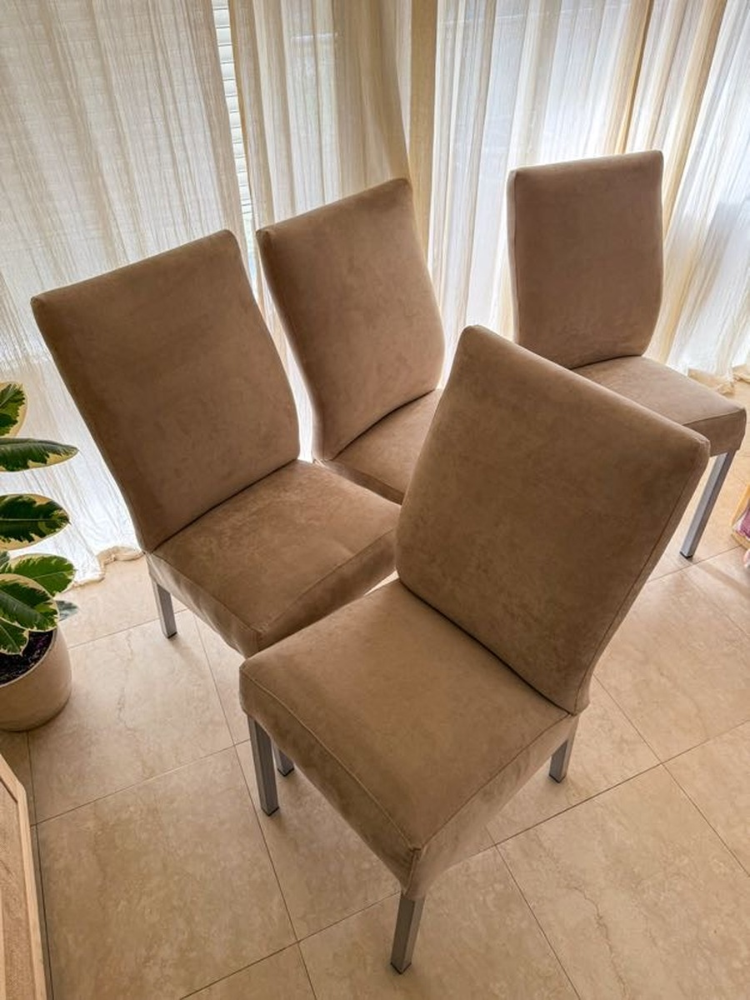
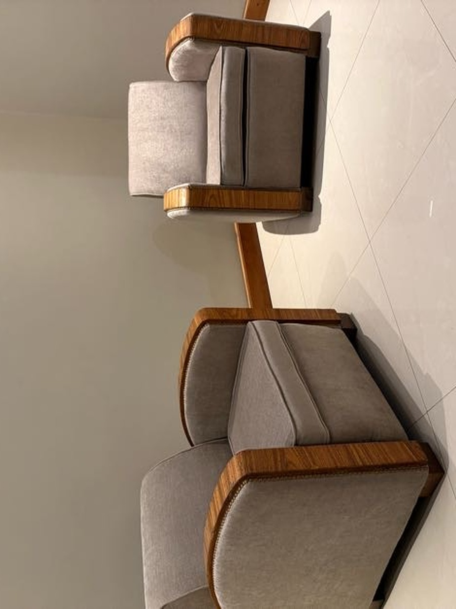

Trabajos Valturi
Ideas que encuentran
su lugar.
Una tela, una forma, una nueva manera de vivir una pieza. Una selección de retapizados y restauraciones que ya son parte de otros espacios.





La elección también se siente